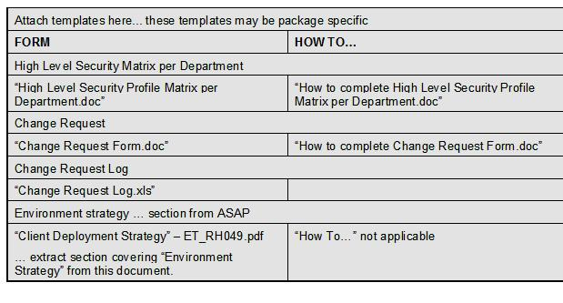
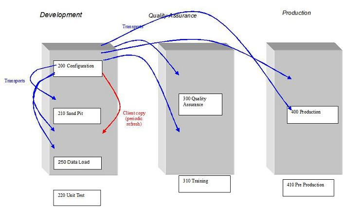

| Guideline: Package Integration Standards and Procedures |
 |
|
IntroductionThis Technique Paper covers: The Client strategy regarding whether standards are to be applied to and whether quality control mechanisms are to be in place to validate the development of:
General GuidanceThe purpose of this paper is to:
Without strategic decisions relating to development, configuration and documentation, there will be no continuity in the techniques adopted by either the technical or non-technical resources on the project. This could result in an uncontrolled development or configuration. The security management will be considered very late, if at all, resulting in no plans being in place when needed with a high probability of the security profiles not being in place at go-live. The scope can change without any management control and can affect the project time scale. Development ApproachInput
Output
 In order to develop the appropriate standards, the following tasks are performed:
A validation of the initial Security Profiles will be done in the "Detailed Future Justifications" Work Product where the individual profiles will be signed off by the Client to be implemented. It is essential to start the Client thinking about security profiles at an early stage. To help in the development of the security profile groups, list the functions to be performed by each job role and group these into security profile groups with common access needs. ExampleThe following is an example for a SAP implementation: Document ControlDistribution List: Client Project Manager, Technical Project Manager, Application Consultants, Application Development Consultants, Basis Consultants, and Customer Project Members. Revision History
SAP Installation for (Client).Server: Development / Production Operating System: OS/400 Version 4 Release 3 Database: DB2 SAP Release: 40B Host name: leasap1 IP Address: 196.175.209.50 System ID/Instance: DEV/00 QAS/10 Hardware Vendor: IBM Model: AS/400 9406-S30 Processor: 2257 Memory: 1.5GB Hardware Supplier: IBM SAP Installation Date: XX/XX/XX File system setup
Client ConfigurationA. RecommendationImplementation of three tier system landscape Due to the nature of the project i.e. the modules that are to be implemented and the fact that this is not a multi-site installation, it is recommended that a three tier system landscape be introduced i.e. DEV -> QAS -> PRD. The Development and Quality assurance instances will be installed on the first AS/400 system and the Production instance will be created on a new system to be acquired later in the project.
B. Client StrategyDevelopment 200 Configuration (Customizing allowed, Automatic recording, Client Independent changes allowed) Client 200 has been created as a copy of standard SAP client 001 with customizing settings only, i.e. no data and no user masters. Client independent customizing changes will be allowed in this client only with transports created for importing to other systems. Its client dependent customizing data will always be changed manually, using automatic recording to create transports for importing into other clients/systems. No transports into client 200 would be allowed. This client should never be used for testing and should not contain any master or transaction data. New programs and SAP scripts would be created in client 200 and these would be made available to all other clients. Access to this client will be limited to people responsible for customizing and developers only. 210 Sand pit (Customizing allowed, No recording, No client independent changes allowed) Client 200 is to be a copy of client 200 once a satisfactory level of configuration has been achieved. It is to be used to test out possible configuration settings that once approved would be re-created manually in client 200. This client will be available to the whole project team for prototyping purposes. Clients 220, 250, 300, 310 would be copies of client 200 once a satisfactory level of customizing had been completed. New customizing data would be transported into these clients from 200 as and when necessary. Therefore, changes would not be allowed within these clients. 220 Unit Test (No changes allowed) This client would be used to provide a place for programmers to test development effort in a reasonably stable environment. Data would be created manually in most cases. 250 Data Load (No changes allowed)
This client would be used to test the data load programs and procedures. Once these were approved they could be used to
populate the configuration test client with more representative data. C. Quality Assurance300 Configuration Test (No changes allowed) This client would be the system test client. Data would be entered manually or via the data load programs once approved. This client will be used exclusively to prove that the proposed changes to the production client are acceptable to the business. 310 Training Master (No changes allowed) The training client should be established once the major elements of the configuration have been put in place. It should include the user masters and starting data required to provide a meaningful training environment. Once set up this client should be saved outside of SAP (exported) and refreshed as necessary (imported) for the start of the next training session. D. Production400 Production (No changes allowed) The production client will be a copy of client 200 with no data or user masters once the customizing is at the relevant stage. Once established there should be no way of changing customizing or data dictionary objects other by transporting them from client 200. 410 Pre-Production (No changes allowed) This client will be used purely for stress and volume tests in the Production environment. It will be created and refreshed in an identical manner to client 400. Once go-live has been achieved this client will be deleted. Proposed Landscape The SAP R/3 Landscape will consist of three instances, therefore configuration and unit testing is carried out in development and system testing in quality assurance. The Sand Pit client 210 is a play area for prototyping, walkthrough training etc. Test data in this client will be compiled for prototyping purposes. This client is to be copied from client 200 once a satisfactory level of configuration has been achieved. Once a particular feature of customizing has been agreed upon, it will be re-created manually in client 200 which will remain free of any transaction or master data. Customizing data will be transported from client 200 to 220 where it can be thoroughly unit tested. When the unit testing has proved successful, the transport requests can then be released and transported to clients 250, 300 and 310 for integration testing. All of these clients can be refreshed with a copy of the master configuration client 200 as and when required. The data load client 250 is used to develop and test data loads. The training client 310 will be included in transports and these will be imported as a matter of course until training begins when imports will be carried out on the authorization of the training manager/coordinator. Client 400 will in essence not be required until the data load or creation of user masters begins immediately prior to go live. So this client can be created (or re-created) at that time as a copy of client 200. Once the system is live, transports are used to protect data within the production client. When the testing of any configuration change has proved to be successful, the transport request can then be imported into client 400 and 410 (if it still exists) in the production environment. Client 410 will be used to finally prove data loads and final testing (e.g. volume/stress tests) prior to go live. All clients are kept aligned using the TMS (Transport Management System). |
| © Copyright IBM Corp. 1987, 2012 All Rights Reserved Property of IBM These materials are intended only for use as part of an IBM engagement |